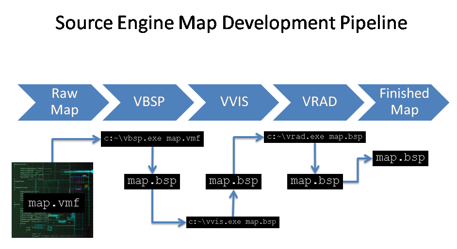
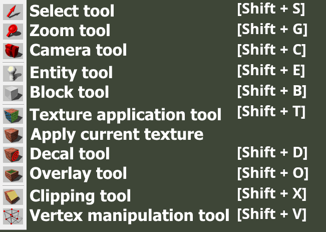
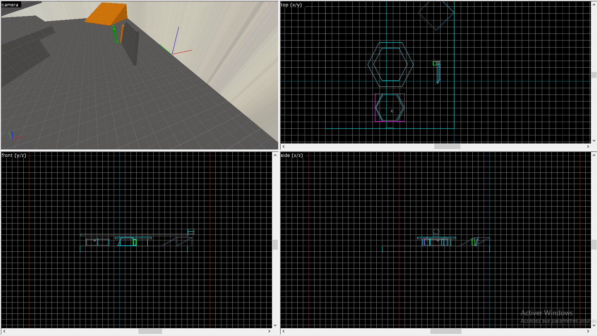
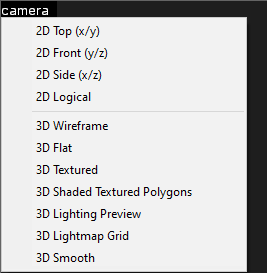
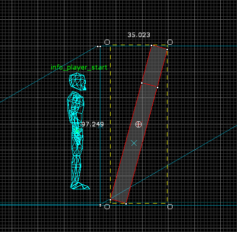
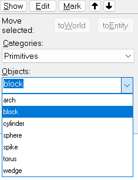
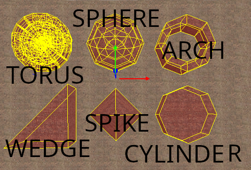
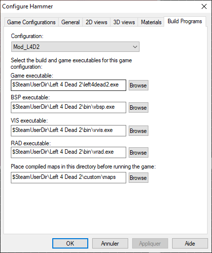
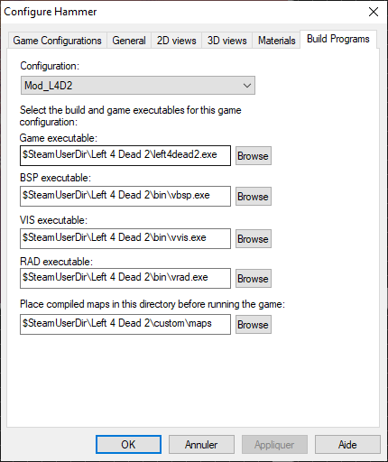

Les Outils d'hammer
Hammer est un éditeur de map permettant de transformer une map que l'on a dessinée vers un format pouvant être lu par le moteur du jeu. Plusieurs conversions sont faite d'abord, on met le fichier .vmf qui est un fichier texte vers le format .bps, puis on découpe l'espace avec vis, pour l'optimisation et on finit par calculer la lumière avec rad.

Outils
Comme beaucoup d'autres logiciels Hammer comporte des outils.

Selection Tools
-
Racourcis Shift + S
-
Il permet tout simplement de sélectionner un objet.
Magnify
-
RacourcisShift + G
-
Permet de zoomer.
Caméra
- Racourcis Shift + C
Entity tools
-
Racourcis Shift + E
-
Permet de créer des entités objet, lumières, personnages. etc...
Block Tools
-
Racourics Shift + B
-
Permet la création d'un block.
Toogle Texture
- Permet l'application d'une texture
Apply current Texture
- Permet d'appliquer la texture sur le block sélectionné.
Racourcis utiles
-
[ ou alt + a ajoutes des lignes sur la grille.
-
] ou alt + s enlève des lignes sur la grille.
-
1 à 0 zoom plan en 2D.
-
niveau de zoom 1 faible. 0 élevé.
-
shift + Z n'affiche qu'une seule fenêtre.
-
shift + W magnétique.
Fenêtre

Hammer de divise en 4 fenêtres "View" en anglais
De gauche à droite et de haut en bas.
La première "View" caméra est une "3D Textured Polygons", la deuxième view est une "2D top (x/y)", la troisième view est une "2D front (y/z)" la quatrième view est une "2D side (x/z)".
Nous pouvons changer les view en cliquant sur une view puis sur le panneau du haut pour changer de view.

Faire une Rotation
Il existe plusieurs moyens de faire une rotation
Nous pouvons le faire de manière manuel. Pour cela, il faut cliquer une fois sur un objet depuis une fenêtre "2D View" vous devez voir des ronds et non des carrés sur l'objet, la rotation depuis une croix celte placer au mileu de l'objet nous pouvons la déplacer pour changer l'angle de rotation.

Sinon depuis une "2D View' faire un clique droit cliquer sur "Transform" rac ctrl+m, nous avons le choix entre changer la rotation (Rotate), l'échelle (Scale) et aussi la position (move).
Crée un Cylindre et une Arche
Avec l'outils Block tracé changer Objects en bas à droite, vous aurez le choix entre.

- "Cylinder" pour faire un cylindre
- "Arch" pour créer une arche
- "sphere" pour créer une sphère
- "Torus" pour créer une forme de donut
- "Wedge" pour créer un triangle
- "Spike" pour créer une forme pointu

Configurer Hammer
 

-Configuration fait Edit et ajouter un nom à votre configuration
-Game Data Files ajouter les fichiers .fgd de votre mod
-Texture Format laisser en Half-Life 2
-Map Type laisser en Half-Life 2
-Default PointEntity class Vous pouvez mettre l'entity par défaut quand vous ajoutez une.
-Default SolidEntity class Mettre le SolidEntity par défault
-Cordon texture Metter tools/toolsskybox
-Game Executable Directory Mettre le .exe de votre mod (hl2.exe)
-Hammer VMF Directory Mettre le dossier mapsrc de votre mod
-Game Executable Mettre le .exe de votre mod
-BSP Executable Mettre bin/vbsp.exe
-VIS Executable Mettre bin/vvis.exe
-RAD Executable Mettre bin/vrad.exe
-Place Compiled maps in this directory before running the game Mettre le dossier maps de votre mod
Utiliser les textures Blends
Crée un displacement de votre face sélectionner dans Hammer avec l'outil toggle texture aplication.

Il suffit maintenant d'utiliser l'option Paint Alpha, pour peindre notre texture cf. Texture Blend